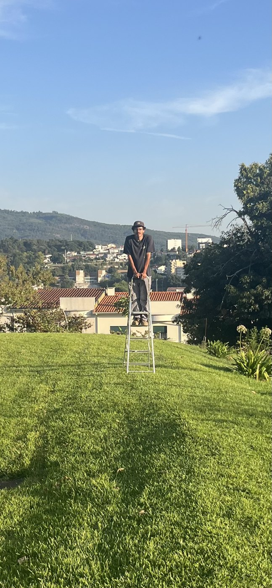

Good Friction

Good Friction trabalha em produção artística, fabricação e instalações de luz. Começa onde todos os projetos começam: num problema. A partir daí, desenha e constrói as estruturas e montagens que tornam possíveis os projetos de outros artistas.
Já criou estruturas para o Coletivo Kindergarten, na exposição Shopyard, para a Inês Coelho da Silva, na Fundação Serralves, para o Coletivo Estudo do Meio, na Noite Branca de Braga, e para o Coletivo Clandestino.
Estruturas e montagens · Braga